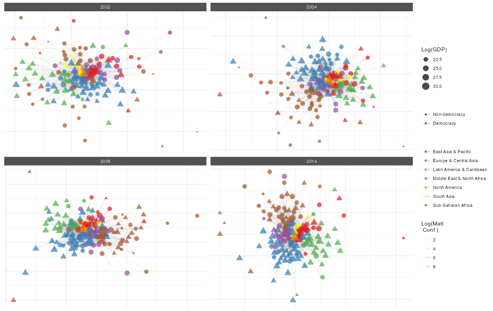

Overview
netify is an R package for working with relational data. It converts edge lists, matrices, and data frames into network objects that you can analyze and visualize using a consistent set of functions.
We built netify while doing our own network research in social science. It handles common tasks like temporal network analysis, ego network extraction, and multiplex relationships without requiring multiple packages or data format conversions.
Installation
# Install from GitHub
# install.packages("devtools")
devtools::install_github("netify-dev/netify")Quick Start
Transform your relational data into a network object with just one function:
library(netify)
data(icews)
# Create a network from dyadic data
icews_conflict <- netify(
icews,
actor1 = 'i',
actor2 = 'j',
time = 'year',
symmetric = FALSE,
weight = 'matlConf',
nodal_vars = c('i_polity2', 'i_log_gdp', 'i_region')
)
# Print the netify object
print(icews_conflict)✔ Hello, you have created network data, yay!
• Unipartite
• Asymmetric
• Weights from `matlConf`
• Longitudinal: 13 Periods
• # Unique Actors: 152
Network Summary Statistics (averaged across time):
dens miss mean recip trans
matlConf 0.113 0 1.471 0.594 0.387
• Nodal Features: None
• Dyad Features: NoneMore involved visualization
netify’s plotting system is highly customizable. Here’s how you can create a more sophisticated visualization:
# Create democracy indicator
icews$i_democ <- factor(
ifelse(icews$i_polity2 >= 6, 1, 0),
levels = c(0, 1),
labels = c("Non-democracy", "Democracy")
)
# Add it to the network
icews_conflict <- add_node_vars(
icews_conflict, icews,
actor = 'i', time = 'year',
node_vars = 'i_democ'
)
# plot(
icews_conflict,
# Log transform weights
mutate_weight = log1p,
# Map node attributes to aesthetics
node_color_by = 'i_region',
node_size_by = 'i_log_gdp',
node_shape_by = 'i_democ',
# set global node alpha
node_alpha = .7,
# set global edge alpha
edge_linewidth = .1,
# Filter data
node_filter = ~ !is.na(i_democ),
time_filter = c('2002', '2004', '2008', '2014'),
# clean up plot labels
edge_alpha_label = 'Log(Matl.\n Conf.)',
node_color_label = '',
node_size_label = 'Log(GDP)',
node_shape_label = ''
) +
theme(legend.position = 'right') +
scale_color_brewer(palette = 'Set1')
What can you do with a netify object?
Get network statistics
summary(icews_conflict)This returns a data frame with network statistics for each time period:
| Year | Actors | Density | Edges | Mean Weight | Reciprocity | Transitivity |
|---|---|---|---|---|---|---|
| 2002 | 152 | 0.090 | 2069 | 1.12 | 0.200 | 0.354 |
| 2003 | 152 | 0.095 | 2193 | 1.54 | 0.294 | 0.358 |
| 2004 | 152 | 0.115 | 2666 | 1.64 | 0.647 | 0.391 |
| … | … | … | … | … | … | … |
(Table shows first few rows - actual output includes all time periods)
Key functions
Building networks
-
netify()- Turn your data into a network object -
ego_netify()- Extract ego networks -
layer_netify()- Stack multiple relationships into multilayer networks
Adding information
-
add_node_vars()- Attach attributes to actors (like GDP, democracy scores) -
add_dyad_vars()- Attach attributes to relationships (like trade volume, conflict events)
Wrangling networks
-
subset()- Pull out specific time periods or actors -
mutate_weights()- Log-transform, normalize, or otherwise modify edge weights
Analysis
-
measurements()- Measurements of your network size and composition -
summary()- Get a quick overview of your network -
summary_actor()- See how individual actors fit into the network -
compare_networks()- See how similar two networks are -
homophily()- Do similar actors tend to connect? -
mixing_matrix()- Who connects with whom?
Visualization
-
plot()- Create network diagrams with sensible defaults -
plot_actor_stats()- Visualize node-level statistics -
plot_graph_stats()- Show how network properties change over time
Working with other packages
-
to_igraph()/to_network()- When you need something we don’t have -
to_amen()- For fitting AME or SRM models -
unnetify()- Get back to a regular data frame
Quick Reference
Essential Functions
| Task | Function | Example |
|---|---|---|
| Create network | netify() |
netify(data, actor1="from", actor2="to") |
| Extract ego network | ego_netify() |
ego_netify(net, ego="USA") |
| Create multilayer | layer_netify() |
layer_netify(list(net1, net2)) |
| Add node data | add_node_vars() |
add_node_vars(net, node_df, actor="id") |
| Subset network | subset() |
subset(net, time="2020") |
| Get summary | summary() |
summary(net) |
| Plot network | plot() |
plot(net) + style_nature() |
| Convert to igraph | to_igraph() |
g <- to_igraph(net) |
| Convert to amen | to_amen() |
amen_data <- to_amen(net) |
| Back to data frame | unnetify() |
df <- unnetify(net) |
When you might need something else
netify handles most network analysis tasks, but sometimes you need specialized tools:
-
Advanced statistical models: Use
to_amen()to fit latent factor models orto_network()for ERGMs -
Graph algorithms we don’t have: Convert with
to_igraph() -
Your own analysis: Use
unnetify()to get back to a data frame
Getting help
- Browse vignettes for detailed guides:
browseVignettes("netify") - Check function documentation:
?netify,?plot.netify, etc. - Report bugs: GitHub Issues
- Ask questions: GitHub Discussions
Contributors
netify is developed by: - Cassy Dorff (Vanderbilt University) - Shahryar Minhas (Michigan State University)
With contributions from: - Ha Eun Choi (Michigan State University) - Colin Henry (Vanderbilt University) - Tosin Salau (Michigan State University)
This work is supported by National Science Foundation Awards #2017162 and #2017180.